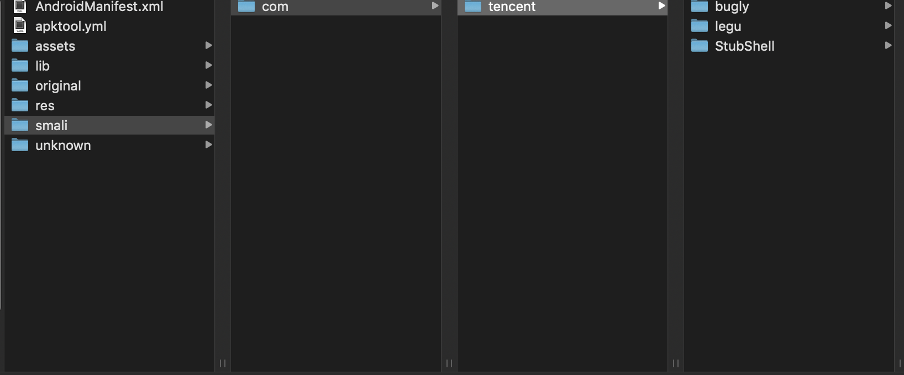
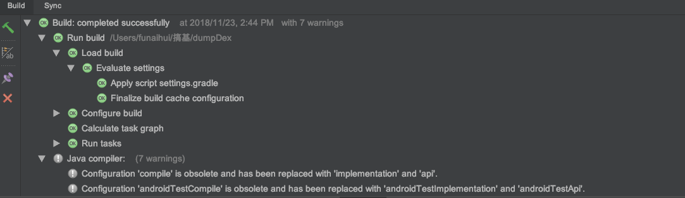

反编译之脱去乐固加固的壳
前言；本文主要是介绍脱壳的方法，并不涉及原理，如果想要了解加固及脱壳的原理，请移驾别处。
写本文的原因
  最近遇到一款app需要开通Vip才能进行视频下载，像我这种贫穷的程序员怎么能忍，既然没钱解决问题那就用技术解决吧！果断开始反编译，但反编译之后的文件却是下面这样的
额，这明显是经过加固后的文件，将真正的dex文件隐藏起来了，这就想让我放弃吗？肯定不可能，于是便有了本文。
脱壳必备的条件
  在操作之前，请确保已经具备以下条件：
- 一部已经root及刷入Xposed的安卓手机
- AndroidStudio（最好具备）
- dumpDex.apk（文中会介绍怎么编译最新源码生成）
编译源码生成dumpDex.apk
  虽然网上已经有dumpDex.apk的成品，但有可能你找到的是比较老的版本了，导致脱壳不成功，即费时又费力，不如自己动手编译最新源码，生成最新的apk，这样可以大大的提高脱壳成功率。
1、将dumpDex的源码下载到本地
  dumpDex的仓库地址为：https://github.com/WrBug/dumpDex
2、将dumpDex导入AndroiddStudio
  怎么将dumpDex导入AndroiddStudio就不说了，这里主要说下，导入项目编译源码的时候会遇到哪些错误及解决方法。
“SSL peer shut down incorrectly”错误
解决方法：将
gradle-wrapper.properties中的以下代码1
distributionUrl=https\://services.gradle.org/distributions/gradle-4.1-all.zip
改成
1
distributionUrl=http\://services.gradle.org/distributions/gradle-4.1-all.zip
即可解决问题。
Error while executing process cmake/3.6.4111459/bin/cmake with arguments {–build /Users/funaihui/搞基/dumpDex/app/.externalNativeBuild/cmake/debug/x86_64 –target nativeDump}
解决方法：将app中的build.gradle中注释掉的这句
1 | // ndk { |
取消注释而且还要将"armeabi"这代码删除，否则还会报其他错误。
解决上面两个错误，这时编译的时候就不会报错了，出现以下界面则说明编译编译成功
但这个时候，你会发现AndroidStudio的工具栏中app上面仍然有个红色的叉号，如下图

这个时候你不要认为还没有编译成功，其实已经成功了，出现这种情况是因为app没有主运行界面。这时点击菜单栏上面的Build–>Build Apk即可生成apk文件。
将编译生成的dumpDex.apk安装到手机
  安装dumpDex.apk后还要做以下几件事：
arm32机型将 lib/armeabi/libnativeDump.so 复制到 /data/local/tmp/libnativeDump.so ，权限 设置为777，arm64机型还需要将将 lib/arm64-v8a/libnativeDump.so 复制到 /data/local/tmp/libnativeDump64.so可以通过文件管理器操作，也可以使用如下adb shell命令。使用adb命令操作的代码如下
1
2
3
4
5#仅适用于32位手机
adb shell
su
cp /data/data/com.wrbug.dumpdex/lib/libnativeDump.so /data/local/tmp
chmod 777 /data/local/tmp/libnativeDump.so在Xposed中☑️dumpDex.apk模块并激活即可。
开始脱壳
  上面的准备工作做完后，就可以愉快的脱壳了。脱壳的方法是启动Xposed，然后运行经过加固的app，这是界面可能会卡住，这时不要立即关掉，可能立即关掉会造成脱壳不完正，只需要等待几分钟关掉即可。
  这时会在/data/data/包名/dump目录下生成脱壳后的真正的dex文件，拿到真正的dex文件后你就可以做你想做的事了。
结束语
  如果不能编译生成dumpDex.apk，可以点击这里进行下载。如果遇到什么其他问题可以在下方留言讨论。